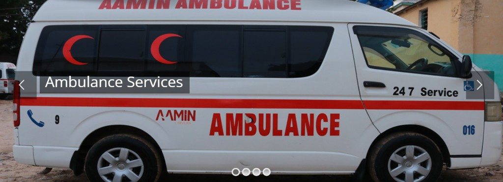

Group Thesis Defense
Aamin Ambulance EADS · Jazeera University
00:00
Jazeera University · Faculty of Computer Science and Information Technology
Bachelor of Computer Science and IT · Group Thesis Defense · June 2026
Aamin Ambulance Emergency Dispatch System (EADS)
A working web platform that replaces Aamin’s paper books and Excel with digital ambulance requests, manual dispatch, crew coordination, and operational reports — for Somalia’s 24-hour free ambulance service.
Thesis book: Aamin Ambulance Dispatch System (AADS)
A walkthrough of the live system. Use the bottom bar on every slide to select any page. Keyboard: ← → · O overview · F fullscreen.
Thesis book · declaration page
Group candidates
Submitted in partial fulfilment of the Bachelor of Computer Science and IT, Jazeera University. Supervisor: Eng. Jamila Hassan Mohamed · June 2026.
#
Candidate (as printed in the book)
Student ID
1
Abdimajid Ali Moalim
CS1300655
2
Ahmed Ibrahim Mahamud
CS1300674
3
Anfac Abdiweli Hassan
CS1300680
4
Mahamed Yusuf Maow
CS1300703
5
Suweys Abdirizak Mahamud
CS1300718
Group ownership
This defense, the thesis book, and the running software belong to the five candidates listed here. It is not an individual presentation.
Field of study
Web application development
Partner organization: Aamin Ambulance, Mogadishu
Artifact: the live EADS / AADS system
The organization
Aamin Ambulance — still without a dispatch system
Aamin is a 24-hour free ambulance service in Mogadishu, founded in 2006 by Dr Abdulkadir Abdirahman Adan. It answers 999 and 3800. What it does not have today is a digital ambulance information system.
Emergency hotline999also 3800
Operations24/7Free of charge
Dispatch todayManualBooks + Excel
How work is done now
Cases are written in paper books and copied into Excel. Crews are reached by phone and radio. When a device fails, the desk loses the thread. Searching an old case means paging through notebooks — if the page still exists.

Field service is real. The information system is not — yet.
The gap and the answer
Problem and solution
Problem — Aamin today
No ambulance system. Intake, assignment, and handover live outside software.
Books and Excel. Details are handwritten, retyped, then go stale.
Devices fail. Phones, radios, and office PCs drop; the case stops with them.
No search resource. Staff cannot quickly find a patient, a unit, or a past incident.
No shared view of who is free. Hospital handover is informal. Delayed cases raise no alert.
→EADS
Solution — the live system
Public request form and 999 desk logging create a tracked case CASE-YYYY-####.
Manual dispatch board. A human still assigns; software shows free units and coverage.
Driver and nurse portals with status taps, notes, handover, chat, and notifications.
Searchable history instead of notebooks — cases, crew, and activity in seconds.
Reports and blog for the board, donors, and the public — without GPS auto-matching.
Scope of the study
What this thesis covers — and what it does not
In scope
Public website: home, request ambulance, tracking, blog, about, services, contact
One searchable system instead of books and spreadsheets — a dispatch pattern that works without GPS infrastructure.
Development environment
Technology we used
Chosen so each EMS domain is a module — not another Excel workbook.
Next.js 14 · TypeScript
App Router for the public site, admin console, and driver / nurse / dispatcher portals, with middleware for role redirects.
NestJS API
Modular REST backend (/api + Swagger). Emergency requests, fleet, stations, notifications, and chat each have a module.
PostgreSQL + Prisma
Relational integrity for cases, crew, stations, and audit logs. Schema is the contract with database Aamin01.
JWT + RBAC
bcrypt passwords, access and refresh tokens, permission grants. Job function lives on EmployeeRole.
Socket.io
Live mission status, in-app communication, and operational alerts — events, not a moving map.
Reports & UI
Recharts dashboards; PDF / Excel export; Tailwind and shadcn/ui for a control-room interface.
Architecture: role UIs → NestJS API → PostgreSQL. Dispatch remains a human action. The stack only shortens the information loop.
Access control
User roles in EADS
Four system accounts plus a public path — matching how Aamin works on the street.
Administrator
Full console: stations, fleet, employees, permissions, content, reports, and audit logs.
Dispatcher
Queue, triage, assign ambulance + driver + nurse, transfer stations, record hospital accept or refuse after the phone call.
Driver
Active Case status taps from assigned through hospital arrival. Simple field UI for unreliable devices.
Nurse
Active Case workspace: assessment, vitals, medical notes, load patient, handover, close with clinical evidence.
Public / caller
Request an ambulance and track by case code or phone. No account required. 999 callers are entered by the desk.
Hospitals (not users)
Directory of receiving facilities. Contact is outside EADS. The dispatcher records the outcome on the case.
Full case scenario — click each step
From 999 to case closed
Scenario: A caller reports a traffic accident near Taleex, Hodan. Two injured. Priority HIGH. Destination: Shaafi Hospital.
1
Call / request999 or public form
2
Log caseCASE-YYYY-####
3
TriagePriority + district
4
AssignStation + crew
5
RespondDriver status taps
6
TreatNurse notes
7
HandoverHospital by phone
8
CloseReports + alerts
1. Call / request
The public submits Request Ambulance, or the 999 desk takes the call. Source is PHONE_CALL, WEBSITE, WALK_IN, STAFF, REFERRAL or OTHER. The paper book is no longer the first record.
The station desk: who is free, and which cases are waiting.
Station Resources. One screen for drivers, nurses, and ambulances at the covering station — so assignment is not a radio round.
Case queues. Pending, critical, delayed / escalated, and triage sit on the same board for the dispatcher on duty.
Module 2
Driver
Field portal built for a phone that may fail mid-shift.
Active Case. Accept the mission and tap status until the case is completed. Each tap is stored on the case log.
Communication. In-app chat and notifications keep the driver linked to dispatch when radio or the device drops.
System modules · 2 of 4
Nurse and Dispatcher
Module 1
Nurse
Clinical work happens on Active Case — not on paper in the ambulance.
Active Case. Assessment, vitals, medical notes, load patient, and handover. Notes update in place; they are not duplicated.
Hospitals and history. Directory lookup for the receiving facility, plus a searchable case history after the shift.
Module 2
Dispatcher
Humans assign. Software shows the queue and the crew.
Dispatch board. New case, pending queue, then assign ambulance + driver + nurse. Never automatic matching.
Mission watch. Follow the case through handover and completed or cancelled — with a reason stored, not lost on a sticky note.
System modules · 3 of 4
Ambulance and Content Management
Module 1
Ambulance
Fleet truth instead of an Excel tab of plate numbers.
Register and availability. Add units and see which ambulances are free versus on duty before anyone is assigned.
History and reports. Which unit ran which case, and when a vehicle was unavailable or in maintenance.
Module 2
Content Management
In-scope public content — the blog is part of this thesis, not an extra website.
Create and publish. Admin writes posts from Content Management: title, body, image, publish or draft.
Public blog. The same posts appear on the Aamin public site for news and health education.
System modules · 4 of 4
Reports and Notifications
Module 1
Reports
Printable evidence for the board, donors, and examiners.
Operations intelligence. Emergency reports, ambulance utilization, staff performance, hospital acceptance, response time, and handover outcomes.
Export PDF / Excel. Period reports leave as files — not as a lost spreadsheet on one desk PC.
Module 2
Notifications
Staff are told when a case is critical or delayed — even if they are not on the dashboard.
Inbox and broadcasts. Assignments, critical cases, delayed missions, and station-wide messages.
Live alerts. Mission toasts on a 5-minute cadence so the desk is not flooded every second.
Contribution
What this thesis delivered
The claim
EADS is a working emergency operations platform for Aamin Ambulance. It turns a 999 call or a public request into a tracked case, a manual crew assignment, a hospital handover, and a signed report — while keeping humans in charge of dispatch.
The academic claim is modest and true: digitizing dispatch information, without GPS auto-matching, is the right architecture for Somali EMS today.
Public pathRequestform + tracking code
Field portals3Dispatcher · Driver · Nurse
Core modules7ops, crew, fleet, content, reports
Hotline aligned999+ 3800
Aamin no longer has to keep the mission in a book, an Excel file, and whoever answered the radio.
Jazeera University · Faculty of Computer Science and Information Technology · 2026
End of presentation · group thesis
Thank you. Questions?
Aamin Ambulance Emergency Dispatch System (EADS)
Abdimajid Ali Moalim · CS1300655
Ahmed Ibrahim Mahamud · CS1300674
Anfac Abdiweli Hassan · CS1300680
Mahamed Yusuf Maow · CS1300703
Suweys Abdirizak Mahamud · CS1300718
Supervisor: Eng. Jamila Hassan Mohamed
Hotline 999 · 3800
Select any slide from the bar below
“Commitment: to save life and provide the highest quality pre-hospital emergency service.” — Aamin Ambulance